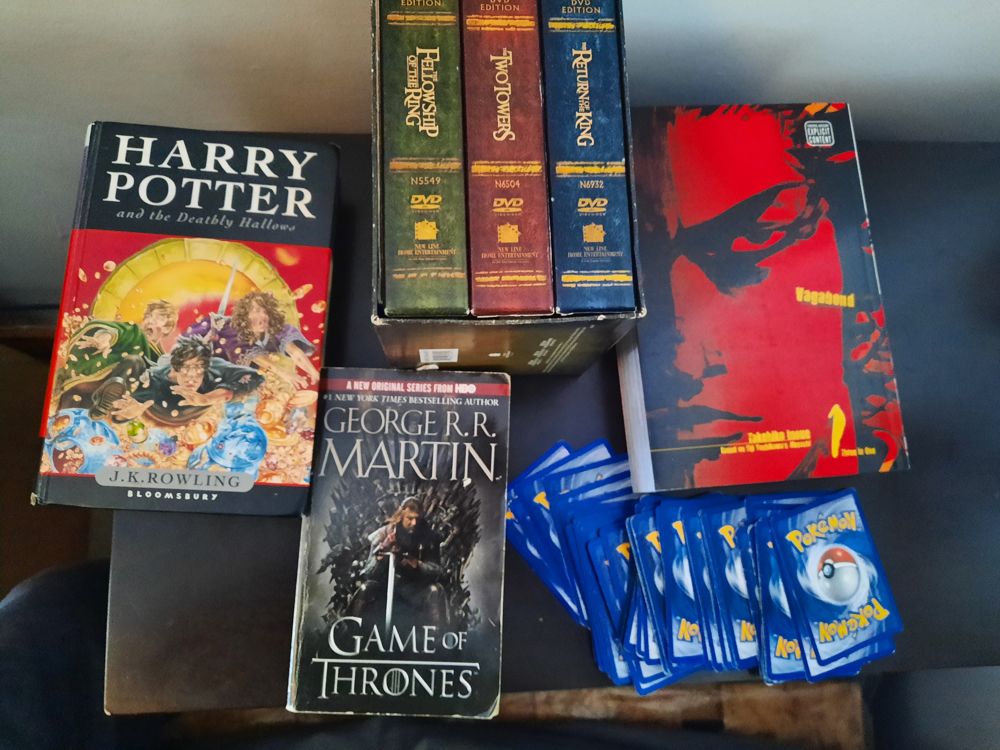

Reviews, Essays, and Analyses
I love fiction, regardless of medium, and as I got more into the review and analysis aspect of it, and I watched videos and articles of people reviewing the stories that I love. I tend to not like talking about things I dislike, so as you will see, most of these reviews will be positive reviews, especially because the stories I want to talk about most, are the ones that I have the most fondness for.
I came up with a concept not that long ago when thinking about a possible series of writings for the possible YouTube account I would start. A series of videos, or in this case scripts, going over stories that had a big impact on me, the main focus being on how they influenced me. This includes how they influenced my taste in stories, genres, the lessons I learned, and how much they personally mean to me.
This concept was meant to spotlight stories regardless of their medium or purpose. For example, this could be a movie, live-action or animated, a television series, or in some cases a game, a video-game, card-game, etc., the stories are meant to be over many different mediums and genres. This is not meant to be an analysis of the quality of the story, like how well written the plot or characters are, but to go over the way it influences and changed the individual, in this case myself.
This may be a concept that you resonate with, and if you do, just start writing. This concept of a series of writings is something I came up with myself, but I am sure there are people who had a similar set of writing pieces.
The hope for these pieces along with the reviews and analyses, is to use them as a base, for what would be a more in-depth review and analyses of these stories, done in the form of either an essay or a video.

Vagabond(Manga) Review and Analysis
In this writing piece, I go over the manga series Vagabond, written by Takehiko Inoue, and adapted from Eiji Yoshikawa’s novel Musashi. This being one of my favourite pieces of fiction, I review the series, analyze aspects of the story, and go over why I personally love the series.